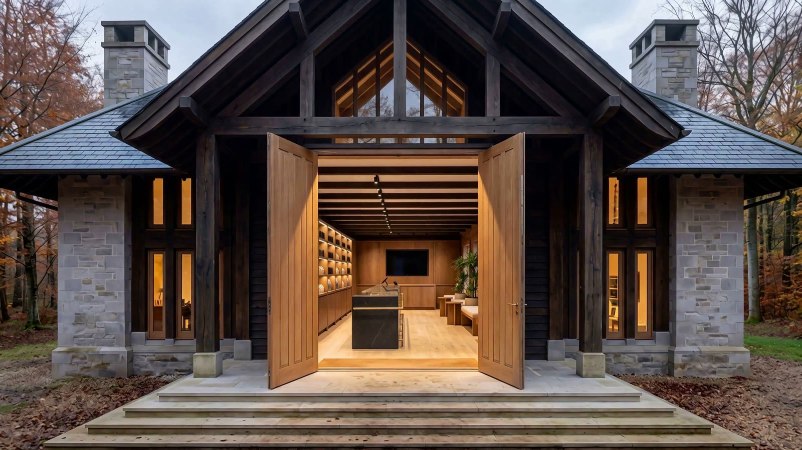

Patient area
Come in.
This part of the clinic is for patients who have seen one of our specialists. Sign in with the details in your welcome email.
Inside
Your prescription,
explained.
The counter
Every jar has a story.
Click any jar to read what it is, and how it was prescribed.
Loading